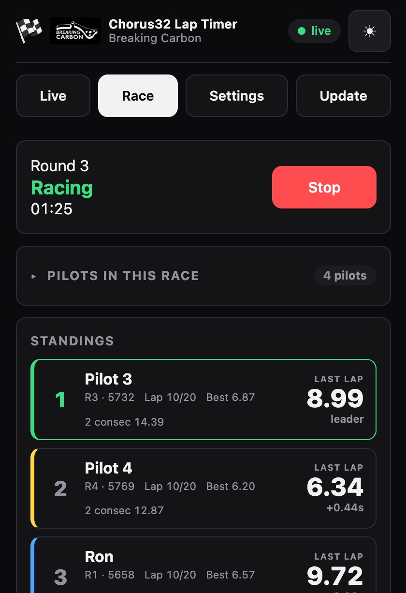
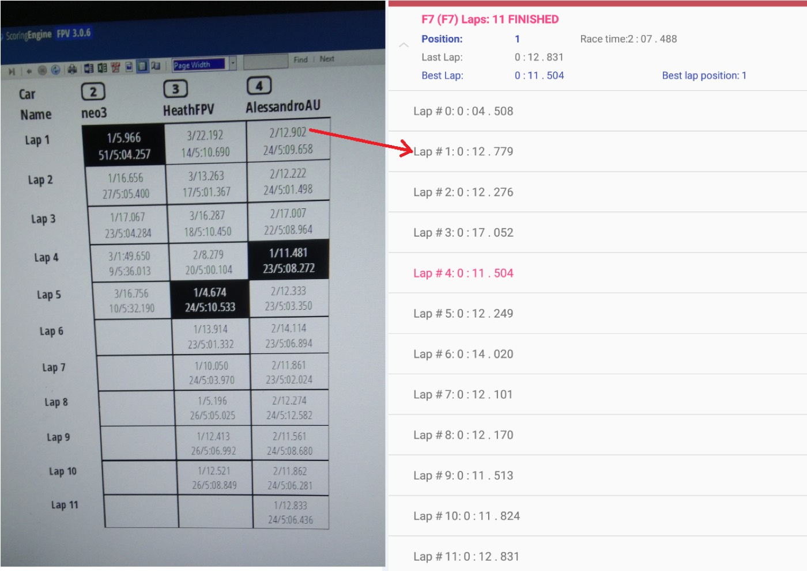

An FPV lap timer that listens to the video transmitters already on your quads. No beacons, no transponders, no extra weight. Build the board, flash two files, join its WiFi, and start a race.


Every racing quad already transmits analogue video on a known channel. This timer parks a receiver on each pilot's channel and watches the signal strength. When a quad flies through the gate the signal spikes, and that spike is the lap.
One RX5808 receiver per pilot, up to six on a board. Each one has its own band, channel and detection threshold, set from the web page and stored on the timer.
No transponder, no beacon, no extra grams. If it flies with a video transmitter on a band the RX5808 can tune, it can be timed.
The timer is the access point. At a field with no internet, phones
join Chorus32_naco_… and open the page. Nothing is
loaded from the web.
Pick the pilots, hit start, and watch standings and lap times update live. Laps are beeped and called out loud, in English or Arabic, so nobody has to look away from the sky.
The original Chorus RF Laptimer app still works, over WiFi. The wire protocol has not changed, so an app paired with an older timer keeps working with this one.
After the first serial flash, new releases upload from the browser. Your channels, thresholds and calibration survive the update.
Both from Naco FPV. Posters are served from this site, so nothing is requested from YouTube until you press play.
The hardware, the flasher, the Android app, and the timer running at a track. Open on YouTube
What changed in firmware 3.0.0, and updating a timer you already own over WiFi. Open on YouTube
Each receiver reports a signal strength, many times a second. Far away from the gate that number sits low and noisy. As a quad comes down the straight it climbs, peaks as the quad passes the antenna, and falls away again.
The timer calls a lap when the signal crosses that pilot's threshold on the way up. Set it above the background noise and below the pass peak and the timer sees one crossing per lap. Set it too low and it counts a quad on the far side of the field; too high and it misses the pass entirely.
A minimum lap time throws away a second crossing that arrives impossibly soon after the first, which is what a quad hovering next to the gate looks like.
The Live page plots the raw signal so you can see all of this while somebody flies a lap. Setting thresholds →

The underlying Chorus timing has been checked against frame-by-frame video scoring of the same race. It is good enough to run heats on, and it costs nothing on the aircraft — which is the trade an RF timer exists to make.

There is nothing to install and nothing to log into. The timer serves its own pages, over its own network, with no internet in sight.
The Race page is the one you hold during a round: standings in order, each pilot's lap count against the target, their best lap, their two best consecutive, and the gap to the leader. Lap history is kept per round until you clear it.
Laps are beeped and spoken aloud, so the person running the round can keep watching the sky. Timing carries on past the flag rather than dropping the lap somebody was already on.
Three guides, in the order you will need them.
The PCB options, the bill of materials, and the soldering notes that matter. Surface-mount work, so read the warning first.
FirmwareThe GUI flasher over an FTDI cable for a new board, then over-the-air updates from the browser for every release after that.
OperationSetting channels and thresholds, calibrating, running the round, and what to do when the phone screen goes dark.
It is a mix of Aaron Smith's minimal micro-ESP32 PCB with cruwaller's firmware, plus the pieces needed to actually run it at a field.
A small Python GUI that pushes the released binaries over an FTDI cable. No toolchain, no PlatformIO, no Arduino IDE.
The original app's TCP support was rebuilt so it connects on current Android releases. The APK is in Downloads.
Several timers at one field stop colliding: each gets its own SSID suffix and WiFi channel, set from the Settings page.
Live signal plot, a race page with standings and lap history, spoken callouts, and browser updates — all served from the timer itself.